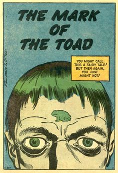

Wednesday, November the 8th, 2017
back to: title, date or indexes
This week is meant to be Dobson Week at Hooting Yard (atoll, pickle, mosh pit), but we must interrupt with important news o' toads. Devoted readers will recall The Book Of Gnats (collected in the slim anthology We Were Puny, They Were Vapid—buy it now if you have not already done so). In part one, we read:
And then my eyes saw, standing fiery on a wooden plinth ringed by scum-pools, the obscene figure of Winckelmann. In his left hand he brandished aloft a scrap of burning linoleum. His right hand was made into a fist. As, dribbling, I watched, the fist was slowly opened to reveal a…. I cannot say. I do not know. For just at the moment my peering, watery eyes would have seen that… that thing, I was startled by a toad, which leapt up at my face, and thwacked me on the forehead, leaving an imprint which remains there to this day, like a brand.
The narrator of part one then turns up in part two as The Man With The Mark Of The Toad! (He invariably attracts an exclamation mark.)
Now, years later, far far away and banished to a pompous land, Mr Mike Jennings has unearthed this piece of comic book art by the creator of Spiderman, one Steve Ditko. An eerie premonition …
